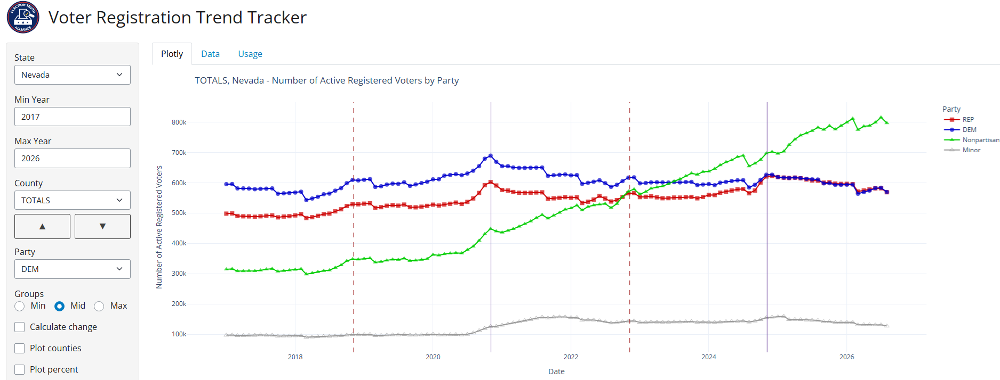
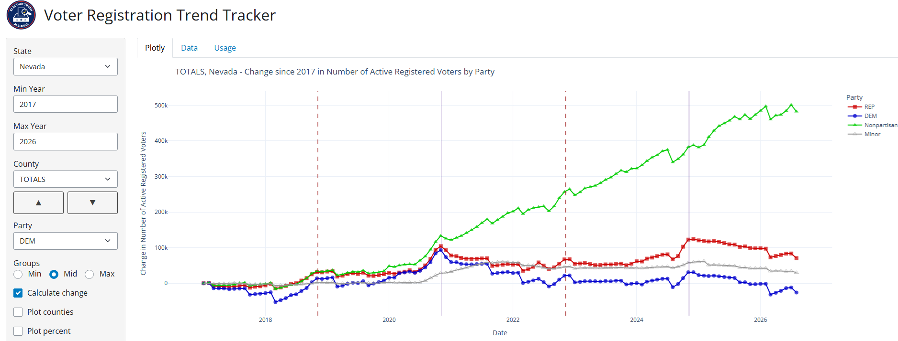
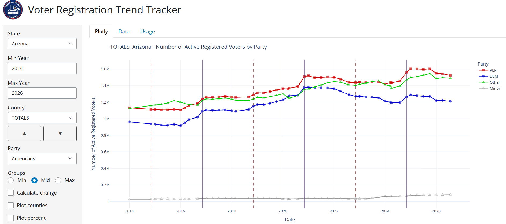

How To Use This Tool
Welcome to the Voter Registration Trends Over Time tool!
The ‘Usage’ tab contains the following:
- What Is the Voter Registration Trends Over Time tool?
- States Included and Data Sources
- Why Make This Tool Publicly Available? (+ Limitations)
- How To Use Voter Registration Trends Over Time
–
1. What is the Voter Registration Trends Over Time tool?
Voter Registration Trends Over Time is an interactive web application that can be used to display the number of registered U.S. voters, by state, over time. It is built and maintained by the Election Truth Alliance (ETA), a volunteer-driven 501(c)(3) non-partisan, non-profit organization dedicated to supporting election integrity through education, research, analysis, and civic engagement.
This tool is intended primarily for more technical audiences, though it is available to the general public and may be of interest to anyone focused on understanding changes to voter registration over time.
At this time, Voter Registration Trends Over Time includes data from 13 states. This data is aggregated, as opposed to the individual data that can be obtained via voter rolls.
Where data is available, the Voter Registration Trends Over Time tool can also show the characteristics of registered voters over time – for example, registered voters by party and active/inactive voters.
–
2. States Included and Data Sources
The tool currently includes data from 13 U.S. states: Arizona, Florida, Iowa, Kentucky, Michigan, North Carolina, New Jersey, Nevada, New York, Ohio, Pennsylvania, Texas, and Wisconsin.
Which states are prioritized to be added depends on several factors, including:
- Accessibility and format of voter registration data by state;
- How far back in time states have shared voter registration data; and,
- ETA volunteer capacity.
All graphics/visualizations in the tool pull from official government sources.
Data Sources By State:
- Arizona: https://azsos.gov/elections/election-information/voter-registration-counts
- Florida: https://dos.fl.gov/elections/data-statistics/voter-registration-statistics/voter-registration-reports/
- Iowa: https://sos.iowa.gov/voter-registration-totals-county
- Kentucky: https://elect.ky.gov/Resources/Pages/Registration-Statistics.aspx
- Michigan: https://www.michigan.gov/sos/elections/election-results-and-data(https://www.michigan.gov/sos/-/media/Project/Websites/sos/Election-Results-and-Statistics/Registered-Voter-Count/2016-Registered-Voter-Count.pdf)
- North Carolina: https://vt.ncsbe.gov/RegStat/ (https://dl.ncsbe.gov/?prefix=NVRA/NVRA%20Reports/)
- New Jersey: https://www.nj.gov/state/elections/election-information-svrs.shtml
- Nevada: https://www.nvsos.gov/sos/elections/voters/voter-registration-statistics/2024-statistics
- New York: https://elections.ny.gov/enrollment-county
- Ohio: https://data.ohiosos.gov/portal/past-election-results (select election and download 'Voter Turnout by County' file)
- Pennsylvania: https://www.pa.gov/agencies/dos/resources/voting-and-elections-resources/voting-and-election-statistics
- Texas: https://www.sos.state.tx.us/elections/historical/vrfig.shtml
- Wisconsin: https://elections.wi.gov/statistics-data/voter-registration-statistics
More technical information can be found on the ETA GitHub. If you see an issue or error with the data depicted, please contact us to let us know.
–
3. Why Make This Tool Publicly Available? (+ Tool Limitations)
This tool was initially built by ETA data team volunteers to support internal research analysis. As we developed and refined the tool further, it became clear to us that:
Visualizations of the underlying baseline information would also be of interest and utility to the general public; and,
Showing and sharing historical trends in voter registration data offers another way to build a foundation of shared truth that can serve as a point of reference when examining current changes to voter registration trends.
Voter registration data in the U.S. is administered and shared in many different locations and formats – some of which require considerable technical expertise to access. Our hope is that this tool can make voter registration trends more accessible and understandable at a glance.
That said, it’s critical to note that the publicly-available version of this tool does come with some key limitations.
Limitations
- This tool does not update in live time. Every time we update this tool to show another, more current data point, ETA volunteers need to run computer code to pull data from the various state websites. This process has not been automated, and will not be automated before the 2026 Midterms.
- Not all states are currently depicted. All states have their own approach to publishing voter registration data. The current states depicted have been prioritized on a tactical basis (states with close elections, swing states, etc) but also practical limitations (which states publish data that can be more easily pulled).
- Some states don’t have registration data by party: While some states provide publicly-available numbers for different party registrations (i.e. Republican, Democratic, No Affiliation), this is not the case in all states. Where party affiliation is a component of voter registration that states make public, it is included and depicted in the tool.
- The data represented was downloaded at a specific point in time. To avoid the data pathway ‘breaking’ whenever state websites update a URL, we pulled voter registration data from state websites at a given point in time (mostly September 2026) for the tracker to pull from.
–
4. How To Use Voter Registration Trends Over Time
Voter Registration Trends Over Time includes three main tabs:
- Plotly: Visualizes changes in the number of registered voters over time.
- Data: Can be used to view the actual data used to generate the graph.
- Usage: This tab describes what the tool is, how to use it, and provides source data links.
What Does The “Plotly” Tab Show?
Voter Registration Trends Over Time “Plotly” tab uses computer programming code to pull from official state data and visualize voter registration trends over time.
- The x axis is temporal, i.e. it indicates different points in time.
- The y axis shows either:
- Actual Registered Voter Numbers (Default):
- Change in Registered Voter Numbers (Calculate Change checked)
As an example, following is the graph for the Actual Registered Voters in Nevada:

The graph shows that there were more DEM (Democratic) active registered voters than REP (Republican) active registered voters in 2017 but they became about equal by 2026. Hovering the mouse over the leftmost and rightmost dots in both lines (or clicking on the Data tab) shows that the number of DEM voters went from about 595k to 569k and the number of REP voters went from about 498k to 569k. That’s a drop of about 26k (595k-569k) DEM voters and an increase of about 71k (569k-498k) REP voters.
Checking the ‘Calculate change’ checkbox will display the following graph:

Hovering the mouse over the leftmost and rightmost dots in both lines (or clicking on the Data tab) shows that the change in the number of DEM voters went from 0 to about -25k and the number of REP voters went from 0 to about 71k. Those are the changes from the leftmost to the rightmost points found in the graph above. It is possible to change the leftmost point by changing the Min Year. But, as before, the change at this leftmost point will be zero.
Following is the graph for the Actual Registered Voters in Arizona, which is currently the initial screen that the application displays on startup:

In the above graph:
- The legend on the right shows that the red line is REP (Republican), the blue line is DEM (Democratic), green is Other (unaffiliated or no party), and gray are minor parties.
- Vertical lines are drawn on the dates of Presidential general elections and the dates of the midterm elections, midway between the Presidential elections. The vertical lines can be turned on and off via the 'Mark generals' and 'Mark midterms' checkboxes.
Side Panel Overview
Following are summaries of the main inputs on the left sidepanel:
- State: Select the U.S. state of interest from the drop-down menu.
- Min Year: Can be adjusted to change the ‘starting year’ of the range of time shown in the graph. (For example, to see registered voters from 2014 to 2020, Min Year would be 2014.) This should default to the minimum year available for the State selection. It can be selected to change the limits of the graph.
- Max Year: Can be adjusted to change the ‘starting year’ of the range of time shown in the graph. (For example, to see registered voters from 2014 to 2020, Max Year would be 2020.) This should default to the maximum year available for the State selection. It can be selected to change the limits of the graph.
- County: This should default to TOTALS to include all of the data from all counties in a state, but can also be set to a specific county. As described for input State above, the items may also list the available districts, races, or genders.
- Groups:
- Min: Use the minimum number of groups of 1 (All).
- Mid: Use the default number of groups (usually REP, DEM, Other, Minor). Note that Other will be whatever that State used for unaffiliated voters.
- Max: Use the maximum number of groups available from the original files.
- Up and Down Arrows: These can be used to quickly go to the previous or next county.
- Party: This is a list of all available parties and is used when the 'Plot counties' checkbox is checked and is explained under that item below.
- Calculate change: IMPORTANT SETTING! If this box is checked, the tracker will show the cumulative change in voter registration from the first date is to be displayed. If this box is not checked, the actual registration totals will be displayed.
- Plot counties: Select to display the lines in the graph by county, instead of by party. This will be unchecked by default, displaying by party unless selected.
- Plot percent: Select to display values by percent (%) instead of by actual registered voter counts. If change is being graphed, it will show percent change from the initial date. However, if the actual values are being displayed, it will show the percent of the total registered voters.
- Mark generals: This is set by default and will mark the general elections by vertical lines.
- Mark midterms: This is set by default and will mark the midterm elections by vertical lines.
- Thousands: This will display the actual counts in thousands. This will be indicated by the y-axis label.
- Add check: This will add columns on the far right in the Data tab showing the value of the reported total minus the sum of all of the parties. This should ordinarily be zero and is used for verification.
- Max counties: The maximum number of counties shown if 'Plot Counties' is selected. In this case, only the numbers for the party specified by the Party select list are shown.
- Parties: This can be set to include only the specified parties in the graph. The default value is "#REP,DEM,Other" (without the quotes). To use, set the parties after the initial '#' character to those that are to be graphed, separated by commas, and add the name to be given to the other parties which will all be grouped under that label. Once this value is set, delete the initial '#' character to activate it. This use of the '#' character keeps the program from trying to redo the graph with each character that the user types into the list of parties.
- Height: This is the height of the graph in pixels. The width will always be the full width of the window.
- Dot size: This is just the size of the dots in the graph.
- Color: These are the colors that will be used in the graph. These should be from the built-in color scales listed at https://plotly.com/python/builtin-colorscales/
- Shape: These are the shapes that will be used in the graph. These should be from the shapes shown at https://www.sthda.com/english/wiki/ggplot2-point-shapes?title=ggplot2-point-shapes
- Get CSV: This will download the data to a .csv CSV file.
- Get Excel: This will download the data to an Excel file. You can also move your mouse over the upper-right corner of a Plotly graph to display the Plotly toolbar.
The following is a brief description of the Plotly controls:
- Download plot as PNG (Camera Icon): Save a copy of the graph as an image.
- Share Chart (Link Icon): Requires ShinyApps account.
- Zoom (Magnifying Glass Icon): Click the Zoom button and drag a box around the portion of the graph you want to enlarge.
- Pan (Arrows Icon): Click Pan and drag the graph to move around a zoomed-in plot.
- Box Select (Dotted Box Icon): Select data points inside a rectangular area.
- Lasso Select (Lasso Icon): Select data points by drawing an irregular shape around them.
- Zoom In / Zoom Out (Plus and Minus Icons): Increase or decrease the magnification.
- Autoscale (Scaling Icon): Automatically adjust the axes to fit the displayed data.
- Reset Axes (House Icon): Return the graph to its original axis ranges.